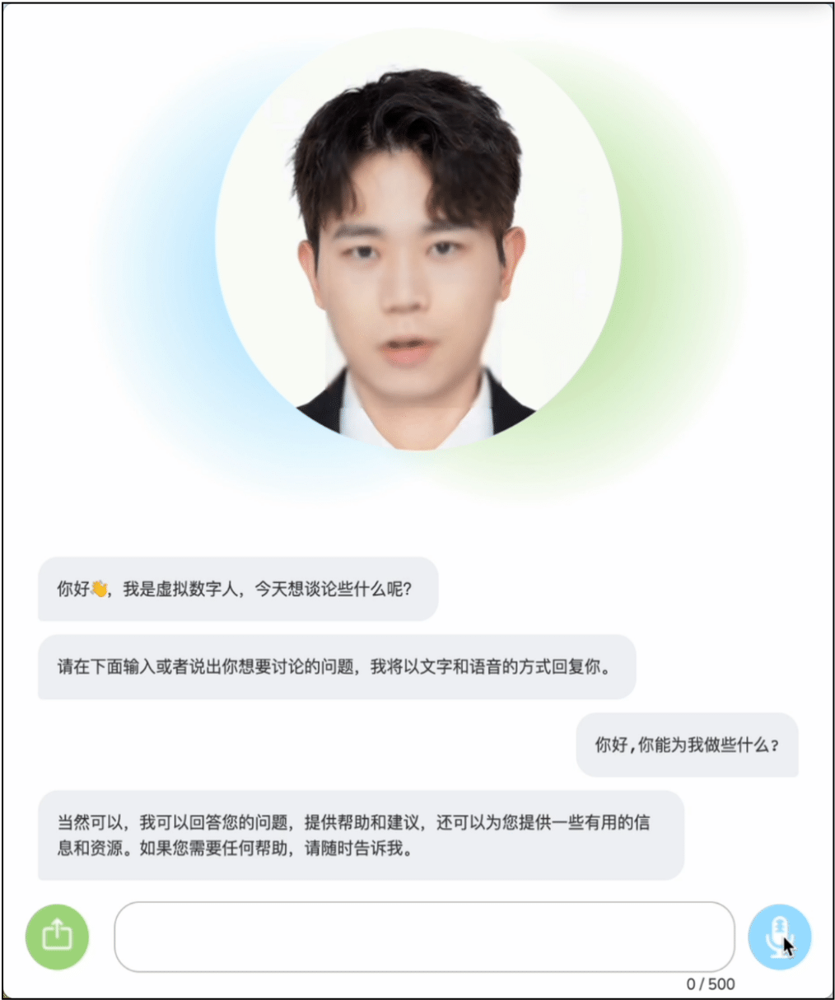
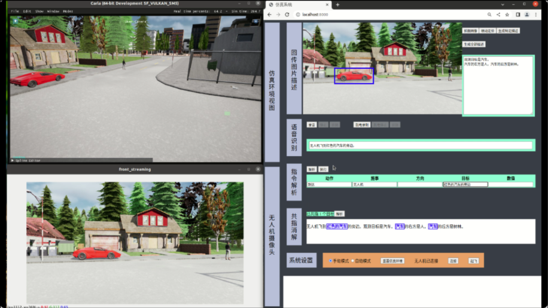
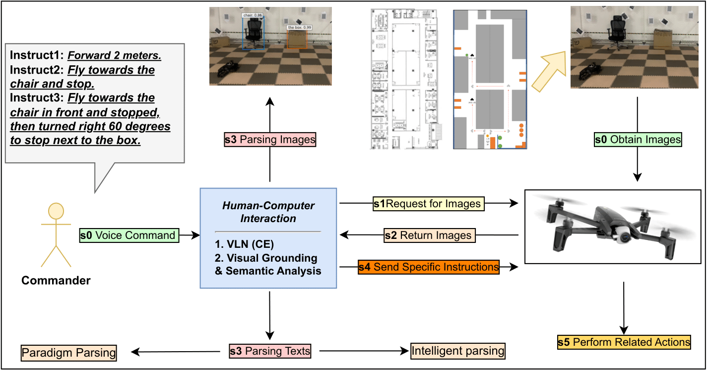

Panzhong Lu (卢攀忠)
I am Pan-zhong Lu, and I am pursuing a suitable PHD position for 2024-Fall. Now, I am a research assistant at Westlake University, my mentor is Prof. Yue Zhang. My research interests include Multimodal (NLP), Robotics, Machine Learning, Human-Computer Interaction, Embodied AI, etc. Before that, I did my master at Tianjin University (2020-2023), where I was advised by Asst. Prof. Meishan Zhang. I did my bachelor at Huazhong Agricultural University (2016-2020).
CV / Email / Google Scholar / GitHub / Twitter
News
Publications
Conference Papers:
-
Extending Phrase Grounding with Pronouns in Visual Dialogues.
Panzhong Lu, Xin Zhang, Meishan Zhang, Min Zhang. EMNLP 2022 (CCF-B) -
An active gene annotation corpus and its application on anti-epilepsy drug discovery.
Yuxing Wang, Kaiyin Zhou, Jin-Dong Kim, Kevin B Cohen, Mina Gachloo, Yuxin Ren, Shanghui Nie, Xuan Qin, Panzhong Lu, Jingbo Xia. IEEE BIBM 2019 (CCF-B)
Projects
-
Customized Virtual Digital Human. Demo
Employed innovative Large Language Model, Automatic Speech Recognition, Text-to-Speech, and Talking Head Generation technologies to develop interactive, tailor-made virtual digital personas. -
Human-computer Interaction in Simulation Environment. Demo
Utilized UAV to capture images of simulation environment, then used image descriptions to direct the UAV’s flight to a specific position. Implemented a pixel-based technique to determine distance by tracking image pixel changes. -
Visual language Navigation in Real Environment.
Explored visual language navigation for UAV in real environment using VLNCE model. Predicted user instructions and RGB/depth images transmitted to UAV via ROS for corresponding actions.
Patents
-
A Multi-Modal-Oriented Interactive Data Annotation Method and System.
Meishan Zhang, Panzhong Lu, Yueheng Sun.
China Patent Application CN202210478381.9, filed May 5, 2022, and issued September 13, 2022. -
A Method and Device for Analyzing Human-Computer Interaction Instructions based on Multi-Modal Semantic Role Recognition.
Meishan Zhang, Panzhong Lu, Zhichao Lin, Yueheng Sun.
China Patent Application CN202210659318.5, filed June 13, 2022, and issued November 11, 2022.